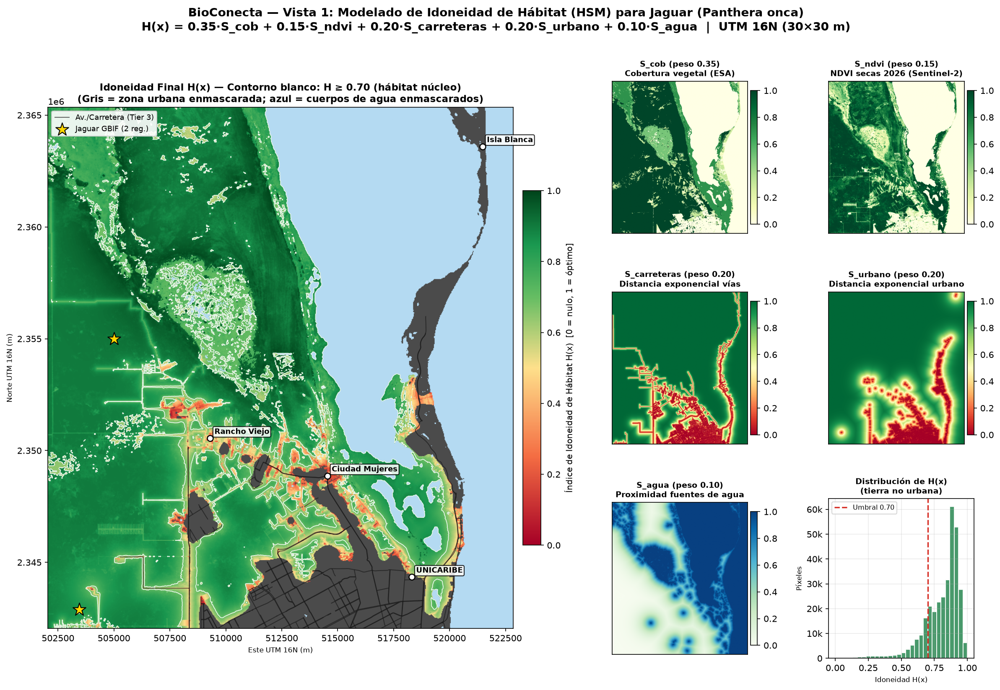
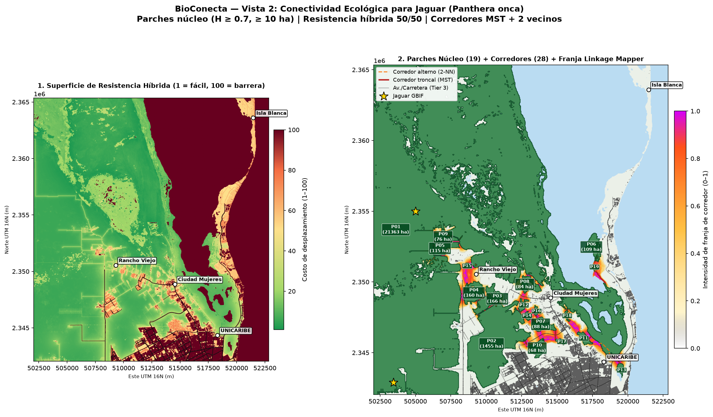
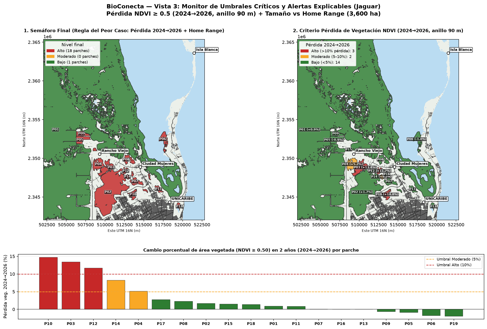
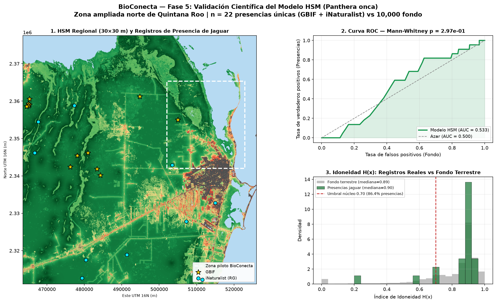

Inteligencia geoespacial para modelar el hábitat, proteger corredores biológicos y emitir alertas tempranas de fragmentación para el jaguar (Panthera onca).
Cría de jaguar atropellada a la altura de la UPQROO. Las vías periféricas actúan como barreras mortales.
Reportes documentados en Villas del Mar (SM 248), Fracc. Alôja y bordes de Arco Norte (911 / PROFEPA).
Los mapas oficiales tardan años en actualizarse y requieren software GIS costoso; las decisiones se toman tarde.
Protegida por la NOM-059-SEMARNAT-2010. Un solo individuo requiere un área mínima vital (home range) de referencia de:
Si garantizamos conectividad para el jaguar, protegemos simultáneamente a decenas de especies, el manglar y la recarga del acuífero.
Metodología híbrida de 5 fases (CRISP-DM + análisis geoespacial en UTM 16N a 30×30 m) con cálculo offline en Python y tablero web fluido.
Parámetros biológicos del jaguar, puntajes de cobertura, tolerancia vial y home range.
ESA WorldCover, Sentinel-2 NDVI (2024–2026), red vial/resorts/agua OSM y GBIF.
Mapa HSM ponderado (5 variables) + parches núcleo y corredores de menor costo.
Mide pérdida NDVI (2024→2026) y tamaño vs. home range con semáforo explicable.
Contraste con presencias reales + app interactiva con sliders en vivo sin QGIS.



P10 (+14.8%), P03 (+13.4%, -31.6 ha) y P12 (+11.7%) en alerta Alta; P14 (+8.2%) y P04 (+5.2%) en Moderada. Todos en Rancho Viejo – Ciudad Mujeres.
Quedan por debajo del 50% del home range (< 1,800 ha). Su supervivencia depende de mantener conectados los corredores hacia P01.
Aplicación web interactiva desplegada en la nube (Streamlit + Folium) con capas precalculadas y recálculo en vivo de idoneidad.
Mapa limpio sin ruido urbano/hotelero, 8 registros reales y 5 sliders en vivo en Ajustes avanzados.
Parches núcleo, franja Linkage Mapper y el paso crítico en Rancho Viejo.
Clic sobre P03 / P10 para abrir su ficha explicable y curva 2024→2025→2026.
Contraste con presencias reales de jaguar (GBIF + iNaturalist) y tabla descargable.

19 de 22 registros reales caen en el núcleo predicho (distancia mediana = 0 m). En zona piloto: H = 0.85 y 0.91.
species_rules.py).